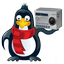
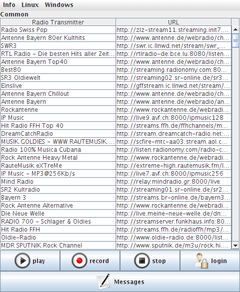
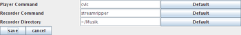

JMyOggRadioPlayer
Dieser Artikel wurde für die folgenden Ubuntu-Versionen getestet:
Ubuntu 16.04 Xenial Xerus
Ubuntu 14.04 Trusty Tahr
Zum Verständnis dieses Artikels sind folgende Seiten hilfreich:

Der JMyOggRadioPlayer  ist ein plattformübergreifendes Programm, das seine Senderliste vom Projekt MyOggRadio
ist ein plattformübergreifendes Programm, das seine Senderliste vom Projekt MyOggRadio  bezieht. Wer kein Radio, aber einen Computer und Internetzugang hat, hat so bequemen Zugriff auf ca. 400 deutsche, europäische und internationale Radiosender und Internetradiostationen. Auch eine Aufnahmemöglichkeit ist vorhanden.
bezieht. Wer kein Radio, aber einen Computer und Internetzugang hat, hat so bequemen Zugriff auf ca. 400 deutsche, europäische und internationale Radiosender und Internetradiostationen. Auch eine Aufnahmemöglichkeit ist vorhanden.
Das junge Projekt befindet sich noch in aktiver Entwicklung. Die Grundfunktionalität ist aber bereits gegeben. Alternative Programme sind im Artikel Internetradio aufzeichnen zu finden.
Voraussetzungen¶
 Das Programm basiert auf Java. Wie man eine Laufzeitumgebung (JRE, ab Version 6) installiert, ist im Artikel Java/Installation beschrieben.
Das Programm basiert auf Java. Wie man eine Laufzeitumgebung (JRE, ab Version 6) installiert, ist im Artikel Java/Installation beschrieben.
Wer aufnehmen möchte, benötigt noch das Programm Streamripper:
streamripper (universe)
 mit apturl
mit apturl
Paketliste zum Kopieren:
sudo apt-get install streamripper
sudo aptitude install streamripper
Online-Nutzung¶
 Statt der nachfolgend beschriebenen Installation auf dem eigenen Rechner kann man auch Java Web Start für JMyOggRadioPlayer verwenden: JMyOggRadioPlayer.jnlp
Statt der nachfolgend beschriebenen Installation auf dem eigenen Rechner kann man auch Java Web Start für JMyOggRadioPlayer verwenden: JMyOggRadioPlayer.jnlp  . Dann nutzt man automatisch immer die neueste Version.
. Dann nutzt man automatisch immer die neueste Version.
Installation¶
 JMyOggRadioPlayer ist nicht in den offiziellen Paketquellen enthalten. Zur Installation muss man daher auf ein Fremdpaket ausweichen.
JMyOggRadioPlayer ist nicht in den offiziellen Paketquellen enthalten. Zur Installation muss man daher auf ein Fremdpaket ausweichen.
Hinweis:
Aufgrund eines Umzugs der Domain von MyOggRadio wird die Version 0.90 oder neuer benötigt. Ältere Versionen funktionieren nur noch sehr eingeschränkt.
Fremdpaket¶
Von der Downloadseite lädt man ein Debian-Paket (.deb) herunter und installiert es von Hand [1].
Hinweis!
Fremdpakete können das System gefährden.
Manuell¶
Alternativ kann man sich die Datei JMyOggRadioPlayer-VERSION.jar herunterladen. Bei dieser Variante gibt es keinen Menü-Eintrag, sondern das Programm kann einfach gestartet werden (siehe unten).
Verwendung¶
 Bei Ubuntu-Varianten mit einem Anwendungsmenü erfolgt der Programmstart [4] über den Eintrag "Multimedia -> MyOggRadioPlayer". Ansonsten startet man die Anwendung über ihren Namen bzw. ein Terminal [5]:
JMyOggRadioPlayer
Alternativ nutzt man – wie bei Java üblich – folgenden Befehl:
java- jar /usr/share/JMyOggRadioPlayer/JMyOggRadioPlayer.jar
oder bei einer manuellen Installation:
java- jar PFAD/ZUR/JMyOggRadioPlayer-VERSION.jar
Die Senderliste wird bei jedem Start des Programms neu von der Webseite MyOggRadio heruntergeladen und besteht aus zwei Spalten: der Sendername und die Stream-URL. Jedesmal, wenn ein Sender angehört wird, wird ein interner Zähler um eins erhöht. Die Senderliste wird nach diesem Zähler sortiert. Sender, die oft gehört werden, wandern so im Laufe der Zeit nach oben. Eine andere Sortierung gibt es nicht.
Es gibt noch keine Möglichkeit, eigene Einträge vorzunehmen. Das geht derzeit nur über die Webseite (nach Anmeldung).

Wiedergabe¶
JMyOggRadioPlayer greift zur Musikwiedergabe auf externe Programme zurück. Das gewünschte Abspielprogramm wird in den Einstellungen konfiguriert. Erfolgreich getestete Programme sind im Artikel weiter unten im Abschnitt AudioPlayer zu finden. Nun wählt man mit einem Linksklick  einen Sender aus und startet die Wiedergabe mit der Schaltfläche "play". Zur Logik der "stop"-Taste siehe auch den nächsten Abschnitt.
einen Sender aus und startet die Wiedergabe mit der Schaltfläche "play". Zur Logik der "stop"-Taste siehe auch den nächsten Abschnitt.

Aufnahme¶
Auch vor einer Aufnahme sollte man zuerst die Programmeinstellungen kontrollieren und evtl. die Streamripper-Optionen anpassen. Kein Geheimnis dürfte sein, dass man die Aufnahme mit der Schaltfläche "record" startet (und mit "stop" wieder beendet). Mitschnitte sind anschließend im unter Einstellungen angegebenen Ordner zu finden.
Hinweis:
Derzeit kann nur entweder die Wiedergabe- oder die Aufnahmefunktion genutzt werden. Läuft bereits eine Wiedergabe, wird diese beendet, wenn man eine Aufnahme aktiviert. Ein Tipp, wie man die Aufnahme auch hören kann, ist am Ende der Artikels zu finden.
Login¶
Man kann sich bei MyOggRadio ein Benutzerkonto anlegen. Dabei geht man keinerlei Verpflichtung ein. Wer bereits ein Benutzerkonto besitzt und sich über den JMyOggRadioPlayer anmeldet, kann:
Neue Sender eintragen
Einzelne Sender als persönliche Favoriten festlegen
Einstellungen¶
 Die Einstellungen erreicht man über den Menüeintrag "Linux -> Preferences". Bei Änderungen das Speichern nicht vergessen, bevor man das Fenster schließt. Änderungen werden in der Datei ~/.java/.userPrefs/prefs.xml im Homeverzeichnis gespeichert, während die Senderliste als ~/JMyOggRadioPlayer.common.json abgelegt wird.
Die Einstellungen erreicht man über den Menüeintrag "Linux -> Preferences". Bei Änderungen das Speichern nicht vergessen, bevor man das Fenster schließt. Änderungen werden in der Datei ~/.java/.userPrefs/prefs.xml im Homeverzeichnis gespeichert, während die Senderliste als ~/JMyOggRadioPlayer.common.json abgelegt wird.
AudioPlayer¶
Der zu verwendende AudioPlayer (vorzugsweise ein einfacher Player ohne Datenbank) kann frei gewählt werden. Erfolgreich getestet wurden:

VLC (oder die Kommandozeilenvariante cvlc; die Lautstärkeregelung erfolgt dann über den Mixer der Desktop-Umgebung)
AlsaPlayer (mit
alsaplayer --startaufrufen oder "Play on start" in den Einstellungen der grafischen Oberfläche aktivieren)
Aufnahme-Einstellungen¶
Die Aufnahme erfolgt mit Streamripper. Dazu trägt man unter "Recorder command" den Befehl streamripper und als "Recorder directory" beispielsweise den Ordner /home/BENUTZERNAME/Musik/ ein. Wer weitere Parameter an Streamripper übergeben möchte, schreibt diese einfach hinter den Ordnernamen. Beispiel:
/home/ubuntu/Musik -r -o never
Weitere Details zu den Parametern sind dem oben genannten Artikel und der Manpage von Streamripper zu entnehmen.
Experten-Info:
Während einer Aufnahme mit Streamripper wird der gewünschte Sender zwar aufgenommen, aber nicht abgespielt – man hört also nichts. Daher ist es empfehlenswert, zumindest den Parameter -r (siehe obiges Beispiel) zu verwenden. Die laufende Aufnahme kann dann als lokaler Stream über die URL http://localhost:8000 mit den genannten AudioPlayern abgespielt werden. Der entsprechende Menüpunkt heißt meist "Adresse öffnen...", "Ort öffnen..." oder ähnlich.
 Übersichtsartikel
Übersichtsartikel- Erstellt mit Inyoka
-
 2004 – 2017 ubuntuusers.de • Einige Rechte vorbehalten
2004 – 2017 ubuntuusers.de • Einige Rechte vorbehalten
Lizenz • Kontakt • Datenschutz • Impressum • Serverstatus -
Serverhousing gespendet von